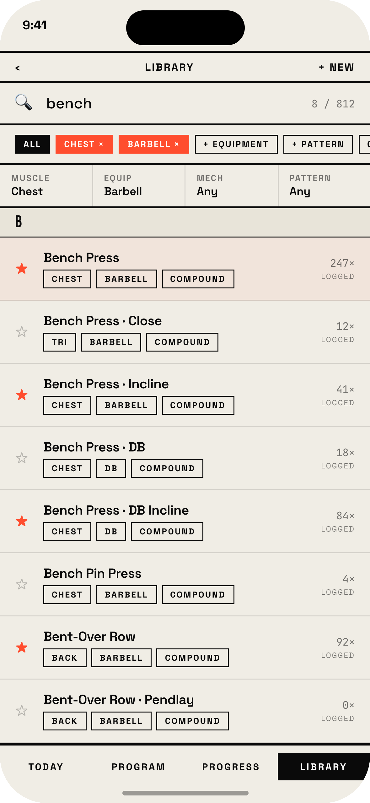
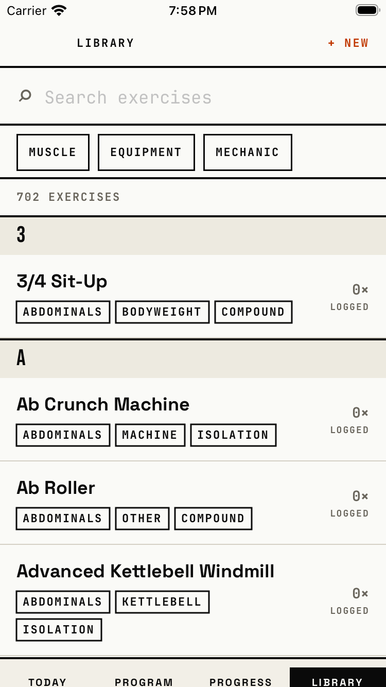
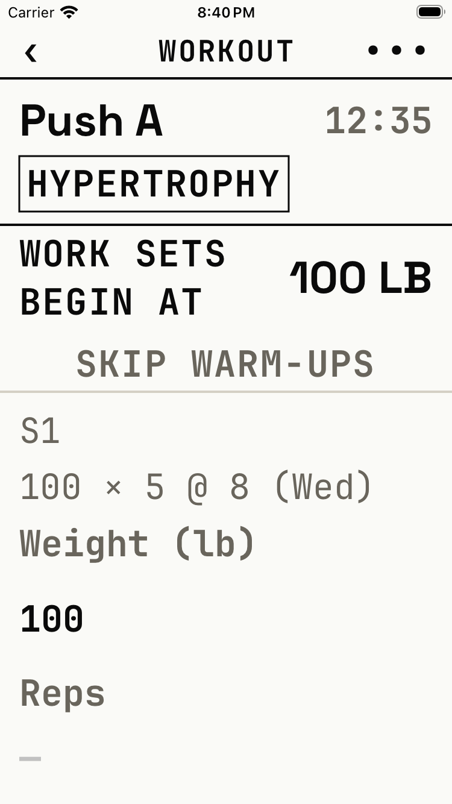
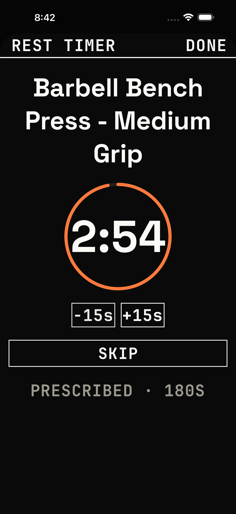

Exercise library
Source design, with illustrative records. This image is not runtime evidence.

BRU / Native iOS / Milestone 01
A small native design system and a persisted workout journey. Existing Claude Design exports guide the visual identity; SwiftUI and SwiftData remain the implementation.
Source design, with illustrative records. This image is not runtime evidence.

Actual simulator screenshot from the authoring journey. 702 bundled strength-oriented exercises, with search and muscle/equipment filters.

Screen implementation exists. Its whole-journey screenshot will be attached after the scenario reaches it. Acceptance remains unproven until that run succeeds.
Adaptive primary surface and text. Light #FAFAF7 / #0A0A0A.
Orange fill with constant ink label. 6.41:1 light / 7.64:1 dark.
#C03700 on light paper; #FF7A3D in dark appearance. ≥4.61:1 on tested inset surfaces.
Adaptive foreground for ink slabs. 6.41:1 light / 5.30:1 dark.
Bebas Neue display · Space Grotesk headings · JetBrains Mono training data. Native roles scale with Dynamic Type.
| Surface | States | Actions and invariants |
|---|---|---|
| Exercise library | Loading, populated, filtered, no matches, details, custom editing, validation error. | Search + muscle/equipment filters, clear, details, create/edit custom. Local catalog and instructions support offline use. |
| Routine / session | Empty, populated, editing, invalid Save. | A routine groups ordered sessions; each session has ordered exercises and targets. Start a workout directly, without requiring a block. |
| Active workout | Planned, entered, completed/reopened set, resting, backgrounded, recovered. | Weight/reps, add/remove sets, completion, ±15-second rest and Skip. Persist actual values and an absolute rest deadline. |
| Summary / history | Empty history, completed workout, previous performance. | Workout snapshots retain names and prescriptions after template edits. Previous excludes the current and unfinished workouts. |
| Shared gallery | Default, pressed, disabled, selected, on/off, completion, long labels. | DEBUG Settings → Developer → Component gallery. Real native controls affect sample state and show immediate feedback. |
| Check | Evidence | Status |
|---|---|---|
| Native app + widget | Xcode 26.5 / iOS 26.5 Simulator, fresh generic native build of current source on 2026-10-04. | Exit 0 |
| Unit tests | 965 passing cases include disk close/reopen, snapshots, bodyweight validation, previous performance and timer recovery. One additional expected failure tracks an intentionally unexecuted SwiftData delete-rule check; runtime enforcement remains unproven. | 965 pass 1 expected failure |
| Complete native journey | Fresh custom authoring, ordered exercises and edited targets, added/deleted sets, 80 lb × 8, rest adjustment, termination/relaunch, 640 lb summary, completed history and previous performance. Passed at 375pt and 440pt. | Both phones pass |
| Larger text / touch | Accessibility-size logger and gallery, 44pt target bounds, keyboard completion, dock and expanded rest controls, completed summary. Compact light and large dark. | Passed |
| Foreground-role contrast | 19 approved semantic pairs pass in light and dark. Core callers were checked; this is not a rendered-pixel audit of all existing screens. | Pairs pass |
Physical VoiceOver navigation, haptics, notification permissions and Live Activity lifecycle remain release checks. No commits or pushes were made; existing user/Claude changes were preserved.
Readable labeled fields replace the compact table row. The test verifies logging and full target visibility below fixed chrome.

A large, scrollable sheet; fitted countdown; working ±15-second controls and Done. Dock adjustment, Skip and Finish also pass.

The routine graph, block resolver and phases already exist. Next prove multiweek authoring and schedule changes. Expand the catalog with stable-ID updates, custom-data preservation and duration/distance support before importing unsupported categories.
Extend existing progress and volume views with reconciled aggregates and useful sparse-data states. The timer ActivityKit bridge exists; prove permissions, expiry, relaunch and activity cleanup on a physical iPhone.
Verify populated backup round-trips first. Define account ownership and conflict resolution for optional sync while keeping local logging usable offline and historical snapshots immutable.
This surface follows the project's BRU color assets, bundled fonts and supplied Claude Design exports. Tabs remain Today · Program · Progress · Library; Settings opens from Today. Baseline SchemaV7 preserves incompatible stores by moving them aside rather than converting them.